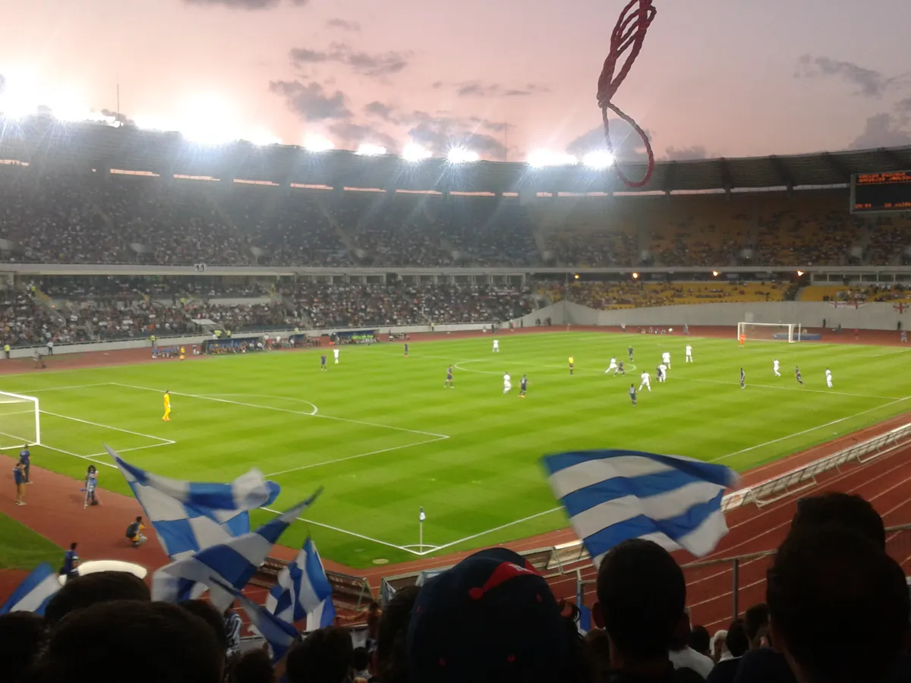
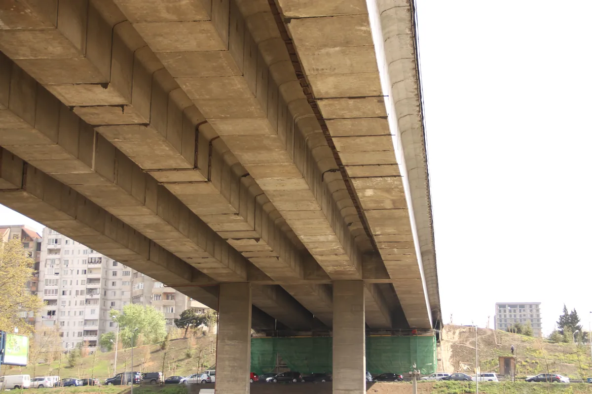
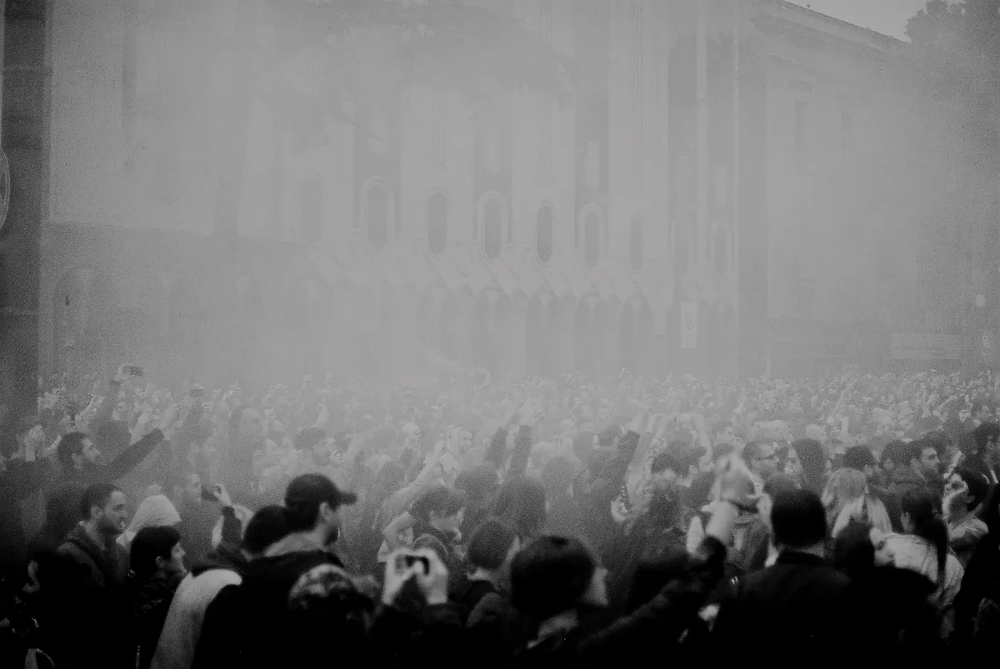

Tbilisi clubs
The best clubs in Tbilisi, from Bassiani to Mtkvarze
A swimming pool under a football stadium, a former fish restaurant and a club under a bridge: the rooms behind Tbilisi's techno reputation, and what two crises did to them.
Tbilisi clubs in short.
Tbilisi nightlife runs on a handful of rooms: Bassiani, KHIDI, Mtkvarze and Left Bank, with the late-night café Café Gallery alongside them. The nights start after midnight and the music is the reason to be there. The scene grew in about a decade, largely in former industrial spaces, and it has been shut down twice: by a police raid in May 2018, and by a strike of the biggest clubs during the winter protests of 2024. This guide covers the clubs, how Tbilisi got here, and five Boiler Room sets filmed at Bassiani and KHIDI. Check current listings before visiting.
How Tbilisi built a club scene.
Bassiani opened in 2014, run by Zviad Gelbakhiani, Tato Getia and Naja Orashvili, and named after a medieval battle fought at Basian. Its main room is a former 50-metre Olympic swimming pool beneath the Boris Paichadze Dinamo Arena, the national stadium, so a football crowd can be above the dancefloor while a club night runs below. Photography is forbidden inside. Horoom is the club's monthly LGBTQ+ night.

Bassiani was not the first. Mtkvarze, which opened before Bassiani in an abandoned Soviet-era fish restaurant, was started by Davit Chikhladze and Keta Gabunia without an investor. Café Gallery, a café by day on Rustaveli Avenue that turns into a club at night, is one of the city's longest-running party venues, and its opening year is reported differently in each place, so it is left out here.
KHIDI followed in 2016 beneath Vakhushti Bagrationi Bridge, with two stages, KHIDI and G2. Its name is the Georgian word for bridge.

Boiler Room filmed at Bassiani in 2018 and at KHIDI in 2019 and 2022. Those recordings are the quickest way to hear what the rooms sound like, and the listening section below uses them.
The 2018 raid and the club strike.
In the early hours of 12 May 2018, according to Mixmag, police raided Bassiani and Café Gallery. Arrest figures were disputed and are left out here. The raids came after a run of drug deaths in the preceding weeks, none of them at the clubs, and protests followed under the slogan We Dance Together, We Fight Together. Georgia's interior minister apologised to protesters within days. Café Gallery reopened on 22 May and Bassiani on 23 May, and on 27 May Boiler Room broadcast a night from Bassiani under the protest's own slogan.

Separately, on 30 July 2018 Georgia's Constitutional Court abolished penalties for cannabis consumption. That ruling followed a lawsuit from an opposition party, so it should not be read as a direct result of the raid.
In winter 2024 the clubs closed themselves. After the government announced on 28 November that it was suspending its EU accession talks, Bassiani, Left Bank, KHIDI and TES closed in protest, and the clubs spent most of December closed. KHIDI opened a crowdfunding appeal on 9 December, and a New York club night, BASEMENT, raised more than $10,000 for Bassiani. KHIDI reopened for one night on 20 December and TES the next day, and New Year's Eve parties followed. On 26 May 2025, Independence Day, more than 70 venues, labels and collectives marched through the city, among them Bassiani, KHIDI, Mtkvarze, TES and Left Bank. Their statement said that art and culture must become symbols of resistance and disobedience in every liberation struggle.
TES, a former Soviet thermal power station on Dodo Abashidze Street, closed on 31 January 2026 after its premises were sold, with a hint from its team of another reincarnation to come. KHIDI also fought an earlier shutdown: it held a party in December 2021 in protest at clubs being left out of the reopening that month, and was raided and ordered shut days later, according to Resident Advisor.
The best clubs in Tbilisi now.
Five rooms make up the list of the best clubs in Tbilisi at the moment, and each runs on a programme of nights rather than a fixed schedule, so the venue's own listing is what to check before going.
| Club | Where | Character | When |
|---|---|---|---|
| BassianiGoogle MapsUpcoming eventsTransport homeCheck current tickets, entry, dress, age and accessibility before travelling. | Akaki Tsereteli Avenue, beneath Dinamo Arena | Opened 2014, main room in a former Olympic swimming pool, no photography | Event nights, check the listing |
| KHIDIGoogle MapsUpcoming eventsTransport homeCheck current tickets, entry, dress, age and accessibility before travelling. | Beneath Vakhushti Bagrationi Bridge | Opened 2016, two stages: KHIDI and G2 | Fridays and Saturdays |
| MtkvarzeGoogle MapsUpcoming eventsTransport homeCheck current tickets, entry, dress, age and accessibility before travelling. | Baratashvili Street | A former Soviet-era fish restaurant, opened before Bassiani | Fridays and Saturdays |
| Left BankGoogle MapsUpcoming eventsTransport homeCheck current tickets, entry, dress, age and accessibility before travelling. | Dodo Abashidze Street 10 | Live music and clubnights in the same venue | Live on Thursday and Sunday, clubnights Friday and Saturday |
| Café GalleryGoogle MapsUpcoming eventsTransport homeCheck current tickets, entry, dress, age and accessibility before travelling. | Off Rustaveli Avenue | A cafe by day and a late-night club, one of the longest-running in the city | Late, at weekends; check before going |
Planning links checked .
KHIDI had events listed through September 2026, including a G2 night on 26 September. Mtkvarze had events listed for early September 2026 and has launched a new series, The Saturnalia, focused on Georgian queer history. Left Bank listed Friday clubnights through February 2026. Bassiani marked 12 years with an anniversary event on 10 July 2026. Café Gallery was reported open in 2026, but its own schedule could not be confirmed for this guide, so check before you go.
Tbilisi techno: what to listen to.
The sets below were all filmed in Tbilisi by Boiler Room and come from this site's catalogue of recorded DJ sets. They cover several sounds, from the Bassiani night of 2018 to a KHIDI bill that ran from techno to hardcore.
The Boiler Room that went out under the protest slogan on 27 May 2018 had Zurkin, Gio Shengelia, Greenbeam and Leon, Bero, and Kancheli and Zitto on the bill. Zurkin's set from Bassiani is the recording to start with.
The first Boiler Room at KHIDI was on 1 March 2019. Shlømo's set from that night is the one to hear.
KHIDI returned to Boiler Room on 15 July 2022 with a bill that ran from electro and industrial to hardcore. Three of its sets are worth hearing for the contrast: Nkisi's hardcore and gabber, Vulkanski's techno and industrial, and Pablo Bozzi's electro, italo and EBM.
Getting in and what to expect.
Clubs here keep late hours, and the main nights are Friday and Saturday. KHIDI and Mtkvarze both run on weekends, and Left Bank adds live music on Thursday and Sunday. Entry prices are reported differently by different sources and change with the night, so the venue's own event page is the number to trust. Bassiani forbids photography inside. Check each club's listing before you go: a closure or a relocation can happen quickly, as TES's sale and the 2024 strike showed.
Tbilisi clubs FAQ.
Is Tbilisi good for nightlife?
Yes, if you want a night built around music. The city has only a handful of serious clubs, and the 2018 protests and the 2024 strike made several of them part of the city's political life.
What is the best club in Tbilisi?
Bassiani is the best known, mainly for its main room in a former swimming pool. KHIDI, under Vakhushti Bagrationi Bridge, is the other room Boiler Room has filmed in the city.
Where is Bassiani?
Bassiani is on Akaki Tsereteli Avenue, beneath the Dinamo Arena stadium.
Are Tbilisi clubs still open?
Most of them. Bassiani, KHIDI, Mtkvarze and Left Bank all had events listed in 2026, after the closures of December 2024. TES closed on 31 January 2026.
Which Tbilisi clubs play techno?
Bassiani and KHIDI are the two Boiler Room has filmed, and both book techno regularly. Left Bank splits its week between live music and clubnights.
Sources.
- Georgia Travel: KHIDI
- Left Bank: About
- Huck: As Tbilisi's famed nightclubs reawaken, a murky future awaits (2025)
- OC Media: Interior minister apologises over Tbilisi nightclub raids (2018)
- Mixmag: Tbilisi club Bassiani has re-opened after forced closure (2018)
- Dazed: How techno became the sound of protest in Georgia
- Crack Magazine: Sites of Resistance, nightlife culture in 2018
- Emerging Europe: We Dance Together, We Fight Together (2018)
- Boiler Room: Tbilisi, We Dance Together, We Fight Together (2018)
- Resident Advisor: Tbilisi venues march on Independence Day (2025)
- Resident Advisor: KHIDI raided (2021)
- Resident Advisor: TES closes (2026)
- Resident Advisor: Mtkvarze launches The Saturnalia (2026)
- Set counts and catalogue details are measured from this site's own catalogue of recorded DJ sets, as of October 2026.
Continue reading
Read next.
 Rave spots~10 min read
Rave spots~10 min readBest Clubs in Berlin: The Legends and the Ones Still Open
The rooms that made Berlin a techno city, the famous clubs that closed, and the best clubs in Berlin that are still open.
Read article → Rave spots~10 min read
Rave spots~10 min readBerghain: Panorama Bar, Sound and Residents
Berghain explained: the former power station, Panorama Bar upstairs, Halle am Berghain, the Kantine, and the Ostgut Ton label.
Read article → Rave spots~6 min read
Rave spots~6 min readBest Clubs in Paris: From Le Palace to Rex Club
Le Palace, Les Bains Douches and Rex Club: the clubs that made Paris nightlife, how each became famous, and the best clubs in Paris open now.
Read article → Rave spots~6 min read
Rave spots~6 min readBest Clubs in Barcelona: From Zeleste to Razzmatazz
Razzmatazz, Nitsa and Macarena Club: how Barcelona's biggest club grew out of a 1970s live venue, and the best clubs in Barcelona open now.
Read article →